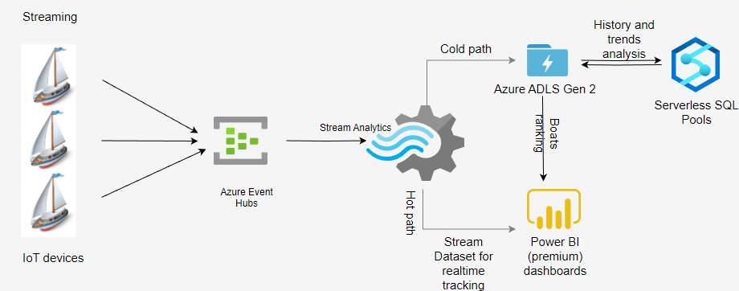
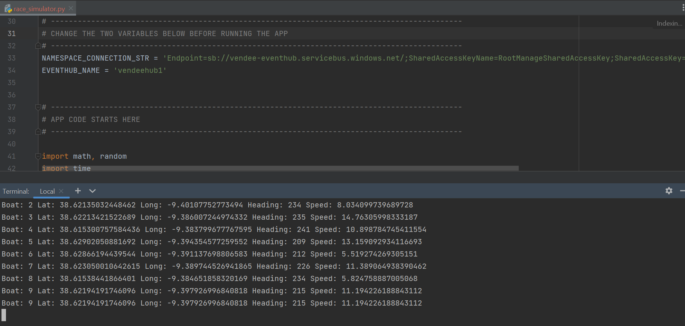

The Vendée Globe is an around-the-world yacht race that is sailed solo and non-stop. It was founded by Philippe Jeantot in 1989 and is considered to be an extremely challenging test of individual endurance and ocean racing. The race is held every four years, and the most recent edition, the 9th, took place in 2020-2021. French sailor Yannick Bestaven was the winner, completing the race in just over 80 days. Throughout the race, spectators were able to track the progress of the boats in real-time on an online racing dashboard. The technology used for this live tracking was provided by Nokia.
In this scenario, I will take on the role of Nokia and design a cloud-based Lambda Architecture to process telemetry data from sailing boats. The architecture will be built on the Azure platform and include a real-time path for processing sailing boat data as it is received, as well as a batch processing path for collecting sailing boat data in batches and performing calculations on those batches.
As the race is not currently taking place, a Python simulator was used to generate boat telemetry data for a fleet of 10 racing participants. This Python race simulation app was configured to send data to the Event Hub in the Azure cloud every 60 seconds.To successfully complete this business case, I undertook the following steps:
1. Design a Lambda Architecture in Azure that includes both real-time and batch-processing paths. The architecture incorporate an Event Hub, a Stream Analytics Job, a Stream Analytics Job, an output to PowerBI, and a second output to a Azure ADLS Gen2.
2. Create a Power BI dashboard that shows a world map with the current location of each racing team, as well as a table ranking the teams by their position in the race.
Challenges
Throughout the course of this business case, we will encounter a number of challenges that need to be addressed:
- The occasional production of garbled data by the Python app, which needs to be filtered out to ensure only clean data is delivered to the Power BI dashboard.
- The need to calculate a ranked list of sailing teams and determine who is currently leading the race
- The selection of an appropriate data service for the batch-processing path in the Lambda Architecture.
- The presentation of data in an effective manner in the Power BI dashboard.
While there may be various solutions available to address each of these challenges, I made specific decisions on how to tackle them to arrive at our 2 different solution
1st proposed architecture using Azure Synapse Analytic
The architecture involves utilizing an Event Hub for data collection, a Stream Analytics Job for real-time and batch processing, Azure Data Lake Gen2 for data storage, Synapse serverless pools for batch calculations, and a Power BI dashboard for data visualization
The departure point for the boats is located in the southern region of Portugal. These boats embark on a south-eastward journey around the globe, continuously transmitting their location data every 60 seconds. With this scenerio, we settled on the following architectural solution:
- Azure Event Hubs: This component serves as a centralized hub for collecting sailing boat data.The Python simulator was used to stream the data directly to the Event Hub.
- The Stream Analytics Job is responsible for processing the incoming data in real time, utilizing both a hot tier for immediate processing and a cool tier for batch processing.
- The processed data is stored in Azure ADLS Gen2, providing a robust and scalable storage solution for large volumes of data.
- Synapse serverless pools are employed to accumulate the processed data batches and perform batch calculations, such as ranking and speed analysis, without the need for dedicated resources.
- Power BI Premium: To visualize the insights gained from both real-time and batch data, a Power BI dashboard is utilized. This dashboard offers a user-friendly interface for displaying the analyzed data and providing valuable insights
The below image represents the 1st solution architechture.

Environment setup
- Azure subcription
- Set up Azure Event Hubs
- Configure the Python simulator to connect with the Event Hub
- Set up Azure Stream Analytics outputs for data streaming to Power BI and batch data to Data Lake
- Azure Data Lake Storage Gen2
- Azure Synapse Analytics
- Power BI Premium
Projects in steps
STEP 1: Python Data Generator

STEP 1: Set up Azure Event Hub
2nd proposed architecture using Databricks and Azure Data Factory